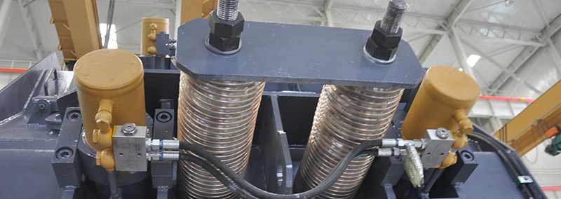

As a widely used second-breaking equipment, impact crusher has always been the main component of mining machinery, because the structure is simple and the price is low, which is welcomed by users. At present, the mainstream impact crusher products in the domestic market include traditional impact crushers and European impact crushers. What is the difference between the two?
The crescent-shaped plate hammer is better, it can guarantee the vertical impact of the material, the impact force is great, the crushing efficiency is high; the impact surface is also bigger and more durable than the straight plate hammer.
Traditional impact crusher: pressure plate fixation
European version impact crusher: wedge fixed
During work, under the action of centrifugal force, the wedge fixing method can ensure the faster the rotor speed, the more stable the hammer is fixed, and the work is reliable. It is more convenient to replace the wedge. This is a better way to fix the hammer. Currently, most manufacturers use this kind of fixing method.
In general, the crescent-shaped plate hammers are often fixed with wedges; the straight plate-shaped plate hammers are often fixed with pressure pieces.
There are three types of hammer fixing methods: bolt fixing, pressure plate fixing and wedge fixing.
Traditional impact crusher: lighter rotor
European version of impact crusher: rotor is heavier
Heavy-duty rotor design and strict detection methods ensure high-quality rotors, making special heavy-duty rotors with higher rotational inertia, strong impact force, and high crushing efficiency.
With the same installed power, European production capacity is much larger than the traditional impact crusher.
The zigzag impact board has a simple structure, but it cannot guarantee more effective impact crushing of the ore. The arc-shaped impact board, which is more commonly used, has an involute shape. The feature of this type of structure is that the ore is impacted in a vertical direction at various points of the impact board, and thus the crushing efficiency is high.
The European version of the three-cylinder impact crusher added a third impact board, producing smaller, more uniform grain sizes, and is ideally suited to the operation of crushing and crushing of various ores.
The number of crushing chambers corresponds to the number of impact plates. The two types of crushers in the European version meet the crushing requirements of most rough, medium and fine crushing operations.
The impact crusher adopts a hydraulic adjustment device, and the simple operation can make the distance between the first and the second impact plates and the rotor become larger or smaller.
European version of the third stage impact adjustment
Adjustment step (this is to adjust the spacing, if reversed): First loosen the fixing screw of the adjusting washer, and then the hydraulic cylinder moves to push the spring inside, so that the distance between the counterplate and the rotor becomes smaller, the outer gasket is installed inside, and then the hydraulic cylinder is released until the limiting board With the gasket inside.
Traditional impact crusher: square steel on the frame
European version of impact crusher: no square steel frame, simplifying the design structure.
The square steel is used to fill the gap between the front guards. The European side impact crusher is closely connected with the side guards. There is no gap and no square steel is required.
Three-cylinder impact crusher does not, only the two-cavity large feed inlet of the European version of the impact crusher. Reason: The two-chamber European impact crusher has a relatively large material inlet, and the two counter-attacks are relatively close, almost parallel to the material inlet. The role of the chain screen is to prevent the machine from flying out of the mine during the process of crushing.
Traditional impact crusher: more welding
European version of the impact crusher: the overall cast steel structure to ensure the stability of the machine.
Traditional impact crusher and European impact crusher, the same size model, the difference between the two, the size of the traditional crushing crusher and the smaller size of the European version of the impact crusher is roughly the same price.
The above comparison between conventional impact crusher and European impact crusher is based on the general situation of impact crusher equipment on the market. It does not exclude that some manufacturers have made other improvements in product design and structure. Users should choose the right type and type of impact crusher products according to their own production requirements.
Next Article: Portable Crusher Plant